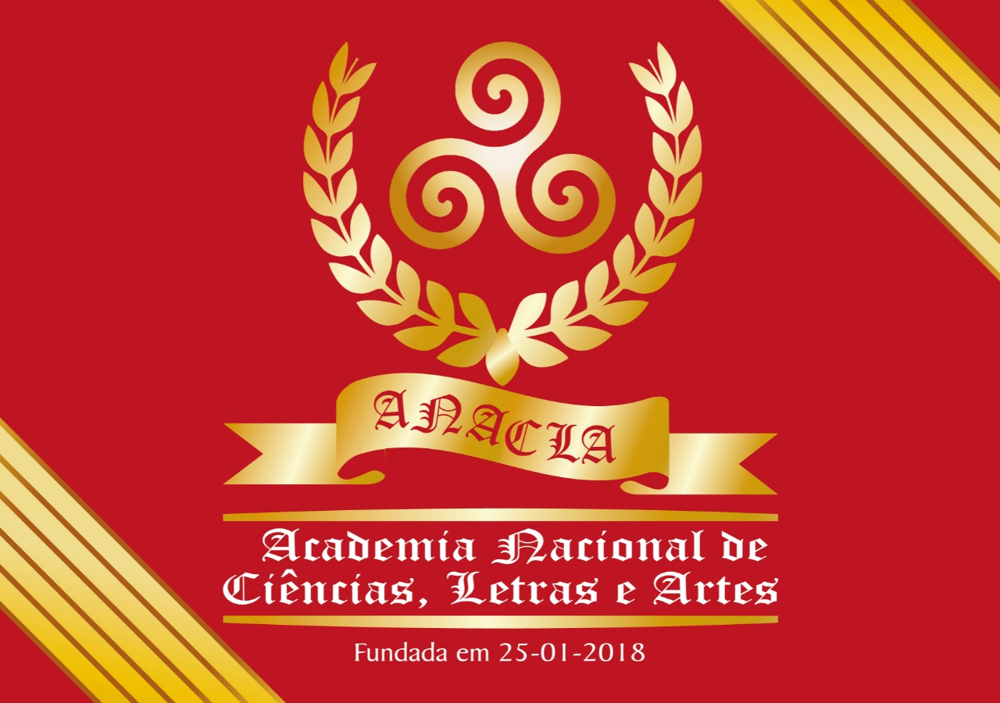

Nosso objetivo principal é cultivar, incentivar e promover a criatividade e o desenvolvimento das letras, das artes e das Ciências em geral.
A palavra “academia” tem suas raízes na Grécia Antiga, derivada de “Akadēmia”, denominação do local onde Platão ensinava filosofia, em Atenas. Fundamentado no pensamento socrático, esse espaço valorizava o questionamento, o diálogo e o debate como caminhos para o desenvolvimento intelectual e humano.
Ao longo da história, o termo passou a identificar instituições dedicadas ao conhecimento, à cultura, às artes e às ciências. Entre as décadas de 1620 e 1630, na França, consolidou-se a denominação “em grego, Akadēmia”, posteriormente difundida por diferentes países, inclusive no Brasil.
Inspirada nessa concepção, a Academia Nacional de Ciências, Letras e Artes — ANACLA realizou sua primeira reunião de fundação em 25 de janeiro de 2018. Em 20 de julho do mesmo ano, aconteceu seu Evento Oficial de Posse Acadêmica, marco de sua constituição institucional.
Desde então, a ANACLA reúne Acadêmicos de diferentes cidades, Estados brasileiros e também brasileiros residentes no exterior, provenientes de diversas áreas culturais. Seus integrantes compartilham o propósito de incentivar a criatividade, a leitura, a escrita, a pesquisa e as descobertas, promovendo o desenvolvimento das Ciências, das Letras e das Artes em suas múltiplas manifestações.
Durante a pandemia, a instituição ampliou sua atuação por meio das plataformas digitais e das mídias sociais, utilizando seu site, canal no YouTube, Instagram e Facebook para fortalecer a comunicação e divulgar suas atividades. O Canal Oficial do YouTube desenvolveu uma proposta de entrevistas em formato descontraído e interativo, reunindo Anaclianos, Acadêmicos de outras instituições e convidados de destaque nas áreas da cultura, das artes, das letras e das ciências.
A ANACLA dedica-se ao incentivo à escrita, à arte e à ciência, apoiando autores, identificando talentos e contribuindo para a formação de leitores e apreciadores culturais. Sua atuação inclui eventos socioculturais, cerimônias oficiais de posse, homenagens, intervenções humanizadas e projetos desenvolvidos em centros culturais, escolas, casas de recuperação e outros espaços da sociedade.
Constituída pela união de ideias, experiências e profissionais de diferentes áreas, a Academia conduz sua trajetória com o propósito de valorizar o conhecimento, estimular a criação e contribuir para o desenvolvimento cultural e a construção de um legado institucional duradouro.
Florianópolis, 08 de setembro de 2026.
Mara Núbia Roloff
Idealizadora/ Fundadora da ANACLA